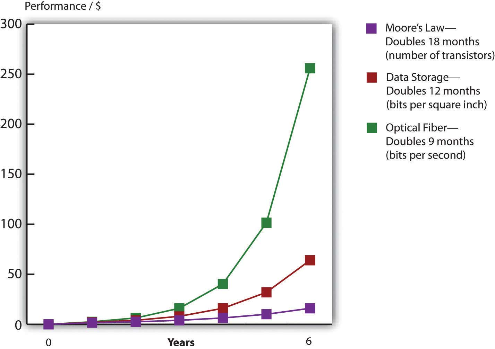
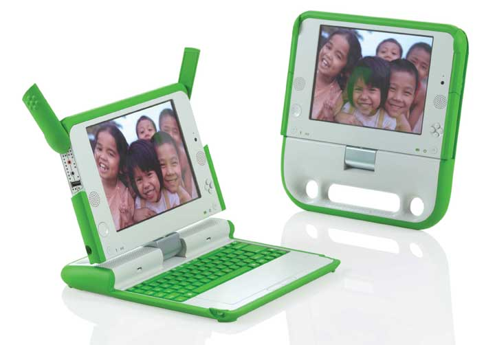

After studying this section you should be able to do the following:
Faster and cheaper—those two words have driven the computer industry for decades, and the rest of the economy has been along for the ride. Today it’s tough to imagine a single industry not impacted by more powerful, less expensive computing. Faster and cheaper puts mobile phones in the hands of peasant farmers, puts a free video game in your Happy Meal, and drives the drug discovery that may very well extend your life.
This phenomenon of “faster, cheaper” computing is often referred to as Moore’s LawChip performance per dollar doubles every eighteen months., after Intel cofounder, Gordon Moore. Moore didn’t show up one day, stance wide, hands on hips, and declare “behold my law,” but he did write a four-page paper for Electronics Magazine in which he described how the process of chip making enabled more powerful chips to be manufactured at cheaper prices.G. Moore, “Cramming More Components onto Integrated Circuits,” Electronics Magazine, April 19, 1965.
Moore’s friend, legendary chip entrepreneur and CalTech professor, Carver Mead, later coined the “Moore’s Law” moniker. That name sounded snappy, plus as one of the founders of Intel, Moore had enough geek cred for the name to stick. Moore’s original paper offered language only a chip designer would love, so we’ll rely on the more popular definition: chip performance per dollar doubles every eighteen months (Moore’s original paper assumed two years, but many sources today refer to the eighteen-month figure, so we’ll stick with that).
Moore’s Law applies to chips—broadly speaking, to processors, or the electronics stuff that’s made out of silicon.Although other materials besides silicon are increasingly being used. The microprocessorThe part of the computer that executes the instructions of a computer program. is the brain of a computing device. It’s the part of the computer that executes the instructions of a computer program, allowing it to run a Web browser, word processor, video game, or virus. For processors, Moore’s Law means that next generation chips should be twice as fast in eighteen months, but cost the same as today’s models (or from another perspective, in a year and a half, chips that are same speed as today’s models should be available for half the price).
Random-access memory (RAM)The fast, chip-based volatile storage in a computing device. is chip-based memory. The RAM inside your personal computer is volatile memoryStorage (such as RAM chips) that is wiped clean when power is cut off from a device., meaning that when the power goes out, all is lost that wasn’t saved to nonvolatile deviceStorage that retains data even when powered down (such as flash memory, hard disk, or DVD storage). (i.e., a more permanent storage media like a hard disk or flash memory). Think of RAM as temporary storage that provides fast access for executing computer programs and files. When you “load” or “launch” a program, it usually moves from your hard drive to those RAM chips, where it can be more quickly executed by the processor.
Cameras, MP3 players, USB drives, and mobile phones often use flash memoryNonvolatile, chip-based storage, often used in mobile phones, cameras, and MP3 players. Sometimes called flash RAM, flash memory is slower than conventional RAM, but holds its charge even when the power goes out. (sometimes called flash RAM). It’s not as fast as the RAM used in most traditional PCs, but holds data even when the power is off (so flash memory is also nonvolatile memory). You can think of flash memory as the chip-based equivalent of a hard drive. In fact, flash memory prices are falling so rapidly that several manufactures including Apple and the One Laptop per Child initiative (see the “Tech for the Poor” sidebar later in this section) have begun offering chip-based, nonvolatile memory as an alternative to laptop hard drives. The big advantage? Chips are solid state electronicsSemiconductor-based devices. Solid state components often suffer fewer failures and require less energy than mechanical counterparts because they have no moving parts. RAM, flash memory and microprocessors are solid state devices. Hard drives are not. (meaning no moving parts), so they’re less likely to fail, and they draw less power. The solid state advantage also means that chip-based MP3 players like the iPod nano make better jogging companions than hard drive players, which can skip if jostled. For RAM chips and flash memory, Moore’s Law means that in eighteen months you’ll pay the same price as today for twice as much storage.
Figure 4.1 Advancing Rates of Technology (Silicon, Storage, Telecom)
Source: Adopted from Shareholder Presentation by Jeff Bezos, Amazon.com, 2006.
Computer chips are sometimes also referred to as semiconductorsA substance such as silicon dioxide used inside most computer chips that is capable of enabling as well as inhibiting the flow of electricity. From a managerial perspective, when someone refers to semiconductors, they are talking about computer chips, and the semiconductor industry is the chip business. (a substance such as silicon dioxide used inside most computer chips that is capable of enabling as well as inhibiting the flow of electricity). So if someone refers to the semiconductor industry, they’re talking about the chip business.Semiconductor materials, like the silicon dioxide used inside most computer chips, are capable of enabling as well as inhibiting the flow of electricity. These properties enable chips to perform math or store data.
Strictly speaking, Moore’s Law does not apply to other technology components. But other computing components are also seeing their price versus performance curves skyrocket exponentially. Data storage doubles every twelve months. Networking speed is on a tear, too. With an equipment change at the ends of the cables, the amount of data that can be squirt over an optical fiber lineA high-speed glass or plastic-lined networking cable used in telecommunications. can double every nine months.Fiber-optic lines are glass or plastic data transmission cables that carry light. These cables offer higher transmission speeds over longer distances than copper cables that transmit electricity.
Faster and cheaper makes possible the once impossible. As a manager, your job will be about predicting the future. First, consider how the economics of Moore’s Law opens new markets. When technology gets cheap, price elasticityThe rate at which the demand for a product or service fluctuates with price change. Goods and services that are highly price elastic (e.g., most consumer electronics) see demand spike as prices drop, whereas goods and services that are less price elastic are less responsive to price change (think heart surgery). kicks in. Tech products are highly price elastic, meaning consumers buy more products as they become cheaper.As opposed to goods and services that are price inelastic (like health care and housing), which consumers will try their best to buy even if prices go up. And it’s not just that existing customers load up on more tech; entire new markets open up as firms find new uses for these new chips.
Just look at the five waves of computing we’ve seen over the previous five decades.Michael Copeland, “How to Ride the Fifth Wave,” Business 2.0, July 1, 2005. In the first wave in the 1960s, computing was limited to large, room-sized mainframe computers that only governments and big corporations could afford. Moore’s Law kicked in during the 1970s for the second wave, and minicomputers were a hit. These were refrigerator-sized computers that were as speedy as or speedier than the prior generation of mainframes, yet were affordable by work groups, factories, and smaller organizations. The 1980s brought wave three in the form of PCs, and by the end of the decade nearly every white-collar worker in America had a fast and cheap computer on their desk. In the 1990s wave four came in the form of Internet computing—cheap servers and networks made it possible to scatter data around the world, and with more power, personal computers displayed graphical interfaces that replaced complex commands with easy-to-understand menus accessible by a mouse click. At the close of the last century, the majority of the population in many developed countries had home PCs, as did most libraries and schools.
Now we’re in wave five, where computers are so fast and so inexpensive that they have become ubiquitous—woven into products in ways few imagined years before. Silicon is everywhere! It’s in the throwaway RFID tags that track your luggage at the airport. It provides the smarts in the world’s billion-plus mobile phones. It’s the brains inside robot vacuum cleaners, next generation Legos, and the table lamps that change color when the stock market moves up or down. These digital shifts can rearrange entire industries. Consider that today the firm that sells more cameras than any other is Nokia, a firm that offers increasingly sophisticated chip-based digital cameras as a giveaway as part of its primary product, mobile phones. This shift has occurred with such sweeping impact that former photography giants Pentax, Konica, and Minolta have all exited the camera business.
Carl Yankowski almost never gets caught in the rain without his umbrella. That’s because Yankowski’s umbrella regularly and wirelessly checks weather reports on its own. If the umbrella gets word it will rain in the next few hours, the handle blinks with increasing urgency, warning its owner with a signal that seems to declare “you will soon require my services.” Yankowski is CEO of “fifth wave” firm Ambient Devices, a Massachusetts startup that’s embedding computing and communications technology into everyday devices in an attempt to make them “smarter” and more useful.
Ambient’s ability to pull off this little miracle is evidence of how quickly innovative thinkers are able to take advantage of new opportunities and pioneer new markets on the back of Moore’s Law. The firm’s first product, the Orb, is a lamp that can be set up to change color in real time in reaction to factors such as the performance of your stock portfolio or the intensity of the local pollen count. In just six months, the ten refugees from MIT’s Media Lab that founded Ambient Devices took the idea for the Orb, designed the device and its software, licensed wireless spectrum from a pager firm that had both excess capacity and a footprint to cover over 90 percent of the United States, arranged for manufacturing, and began selling the gizmo through Brookstone and Nieman Marcus.Michael Copeland, “How to Ride the Fifth Wave,” Business 2.0, July 1, 2005; and J. Miller, “Goodbye G.U.I? Ambient Orb a Computer ‘Mood Ring,’” Mass High Tech, February 10, 2003.
Ambient has since expanded the product line to several low-cost appliances designed to provide information at a glance. These include the Ambient Umbrella, as well as useful little devices that grab and display data ranging from sports scores to fluctuating energy prices (so you’ll put off running the dishwasher until evening during a daytime price spike). The firm even partnered with LG on a refrigerator that can remind you of an upcoming anniversary as you reach for the milk.
Figure 4.2
Products developed by “fifth wave” firm Ambient Devices include the weather-reading Ambient Umbrella, the Energy Joule, a seven-day forecaster, and the Orb lamp.
Source: Used with permission from Ambient Devices.
One of the most agile surfers of this fifth wave is Apple, Inc.—a firm with a product line that is now so broad that in January 2007, it dropped the word “Computer” from its name. Apple’s breakout resurgence owes a great deal to the iPod. At launch, the original iPod sported a 5 GB hard drive that Steve Jobs declared would “put 1,000 songs in your pocket.” Cost? $399. Less than six years later, Apple’s highest-capacity iPod sold for fifty dollars less than the original, yet held forty times the songs. By that time the firm had sold over one hundred fifty million iPods—an adoption rate faster than the original Sony Walkman. Apple has sold new, low-end iPods for less than fifty dollars a piece, and high-end models have morphed into Internet browsing devices capable of showing maps, playing videos, and gulping down songs from Starbucks wi-fi while waiting in line for a latte.
The original iPod has also become the jumping off point for new business lines including the iPhone, Apple TV, and iTunes store. As an online store, iTunes is always open. iTunes regularly sells tens of millions of songs on Christmas Day alone, a date when virtually all of its U.S.-based competition is closed for the holiday. In a short five years after its introduction, iTunes has sold over four billion songs and has vaulted past retail giants Wal-Mart, Best Buy, and Target to become the number one music retailer in the United States. Today’s iTunes is a digital media powerhouse, selling movies, TV shows, games, and other applications. And with podcasting, Apple’s iTunes University even lets students at participating schools put their professors’ lectures on their gym playlist for free. Surfing the fifth wave has increased the value of Apple stock sixteenfold six years after the iPod’s launch. Ride these waves to riches, but miss the power and promise of Moore’s Law and you risk getting swept away in its riptide. Apple’s rise occurred while Sony, a firm once synonymous with portable music, sat on the sidelines unwilling to get on the surfboard. Sony’s stock stagnated, barely moving in six years. The firm has laid off thousands of workers while ceding leadership in digital music (and video) to Apple.
Table 4.1 Top U.S. Music Retailers
| 1992 | 2005 | 2006 | 2008 |
|---|---|---|---|
| 1. Musicland | 1. Wal-Mart | 1. Wal-Mart | 1. iTunes |
| 2. The Handleman | 2. Best Buy | 2. Best Buy | 2. Wal-Mart |
| 3. Tower Records | 3. Target | 3. Target | 3. Best Buy |
| 4. Trans World Music | 7. iTunes | 4. iTunes, Amazon tie | 4. Amazon, Target tie |
| Moore’s Law restructures industries. The firms that dominated music sales when you were born are now bankrupt, while one that had never sold a track now sells more than anyone else.Note: Twelve tracks are equivalent to one CD. | |||
While the change in hard drive prices isn’t directly part of Moore’s Law (hard drives are magnetic storage, not silicon chips), as noted earlier, the faster and cheaper phenomenon applies to storage, too. Look to Amazon as another example of jumping onto a once-impossible opportunity courtesy of the price/performance curve. When Amazon.com was founded in 1995, the largest corporate database was one terabyte or TB (see “Bits and Bytes” below) in size. In 2003, the firm offered its “Search Inside the Book” feature, digitizing the images and text from thousands of books in its catalog. “Search Inside the Book” lets customers peer into a book’s contents in a way that’s both faster and more accurate than browsing a physical bookstore. Most importantly for Amazon and its suppliers, titles featured in “Search Inside the Book” enjoyed a 7 percent sales increase over nonsearchable books. When “Search Inside the Book” launched, the database to support this effort was 20 TB in size. In just eight years, the firm found that it made good business sense to launch an effort that was a full twenty times larger than anything used by any firm less than a decade earlier. And of course, all of these capacities seem laughably small by today’s standards (see Chapter 11 "The Data Asset: Databases, Business Intelligence, and Competitive Advantage"). For Amazon, the impossible had not just become possible; it became good business. By 2009, digital books weren’t just for search; they were for sale. Amazon’s Kindle reader (a Moore’s Law marvel sporting a microprocessor and flash storage) became the firm’s top-selling product in terms of both unit sales and dollar volume.
Computers express data as bits that are either one or zero. Eight bits form a byte (think of a byte as being a single character you can type from a keyboard). A kilobyte refers to roughly a thousand bytes, or a thousand characters, megabyte = 1 million, gigabyte = 1 billion, terabyte = 1 trillion, petabyte = 1 quadrillion, exabyte = 1 quintillion bytes.
While storage is most often listed in bytes, telecommunication capacity (bandwidth) is often listed in bits per second (bps). The same prefixes apply (Kbps = kilobits, or one thousand bits, per second, Mbps = megabits per second, Gbps = gigabits per second, Tbps = terabits per second).
These are managerial definitions, but technically, a kilobyte is 210 or 1,024 bytes. Mega = 220, tera = 230, giga = 240, peta = 250, and exa = 260. To get a sense for how much data we’re talking about, see Table 4.2 "Bytes Defined" below.E. Schuman, “At Wal-Mart, World’s Largest Retail Data Warehouse Gets Even Larger,” eWeek, October 13, 2004; and J. Huggins, “How Much Data Is That?” Refrigerator Door, August 19, 2008.
Table 4.2 Bytes Defined
| Managerial Definition | Exact Amount | To put it in perspective | |
|---|---|---|---|
| 1 Byte | One keyboard character | 8 bits | 1 byte = a letter or number |
| 1 Kilobyte (KB) | One thousand bytes | 210 bytes | 1 typewritten page = 2 KB |
| 1 digital book (Kindle) = approx. 500–800 KB | |||
| 1 Megabyte (MB) | One million bytes | 220 bytes | 1 digital photo (7 megapixels) = 1.3 MB |
| 1 MP3 song = approx. 3 MB | |||
| 1 CD = approx. 700 MB | |||
| 1 Gigabyte (GB) | One billion bytes | 230 bytes | 1 DVD movie = approx. 4.7 GB |
| 1 Terabyte (TB) | One trillion bytes | 240 bytes | Printed collection of the Library of Congress = 20 TB |
| 1 Petabyte (PB) | One quadrillion bytes | 250 bytes | Wal-Mart data warehouse (2008), 2.5 PB |
| 1 Exabyte (EB) | One quintillion bytes | 260 bytes | |
| 1 Zettabyte (ZB) | One sextillion bytes | 270 bytes | Amount of data consumed by U.S. households in 2008 = 3.6 ZB |
Here’s another key implication—if you are producing products with a significant chip-based component, the chips inside that product rapidly fall in value. That’s great when it makes your product cheaper and opens up new markets for your firm, but it can be deadly if you overproduce and have excess inventory sitting on shelves for long periods of time. Dell claims its inventory depreciates as much as a single percentage point in value each week.Bill Breen, “Living in Dell Time,” Fast Company, November 24, 2004. That’s a big incentive to carry as little inventory as possible, and to unload it, fast!
While the strategic side of tech may be the most glamorous, Moore’s Law impacts mundane management tasks, as well. From an accounting and budgeting perspective, as a manager you’ll need to consider a number of questions: How long will your computing equipment remain useful? If you keep upgrading computing and software, what does this mean for your capital expense budget? Your training budget? Your ability to make well-reasoned predictions regarding tech’s direction will be key to answering these questions.
Nicholas Negroponte, the former head of MIT’s Media Lab, is on a mission. His OLPC (One Laptop per Child) project aims to create a one-hundred-dollar laptop for distribution to the world’s poor. A rubberized keyboard and entirely solid-state design (flash RAM rather than hard drive) help make the machine durable. The laptop’s ultrabright screen is readable in daylight and can be flipped to convert into an e-book reader. And a host of open source software and wiki tools for courseware development all aim to keep the costs low (the first generation of the product, called the XO, was priced around $175). Mesh networking allows laptops within a hundred feet or so to communicate with each other, relaying a single Internet connection for use by all. And since the XO is targeted at the world’s poorest kids in communities where power generation is unreliable or nonexistent, several battery-charging power generation schemes have been tested including a hand crank, pull chord, and foot pedal. In its first two years, the OLPC foundation delivered 825,000 laptops to children in twenty-four countries.C. Lawton, “The X.O. Laptop Two Years Later,” Wired, June 19, 2009. The XO is a product made possible by the rapidly falling price of computing.
While the success of the OLPC effort will reveal itself over time, another tech product containing a microprocessor is already transforming the lives of some of the world’s most desperate poor—the cell phone. There are three billion people worldwide that don’t yet have a phone, but they will, soon. In the ultimate play of Moore’s Law opening up new markets, mobiles from Vodafone and Indian telecom provider Spice sell for $25 or less. While it took roughly twenty years to sell a billion mobile phones worldwide, the second billion sold in four years, and the third billion took just two years. Today some 80 percent of the world’s population lives within cellular network range, double the 2000 level. Today the vast majority of mobile subscriptions are in developing countries.Sara Corbett, “Can the Cellphone Help End Global Poverty?” New York Times Magazine, April 13, 2008.
Figure 4.3 The XO PC
Source: Used with permission from fuseproject.
Why such demand? Mobiles change lives for the better. According to Columbia economist Jeffry Sachs, “The cell phone is the single most transformative technology for world economic development.”Jack Ewing, “Upwardly Mobile in Africa,” BusinessWeek, September 24, 2007, 64–71. Think about the farmer who can verify prices and locate buyers before harvesting and transporting perishable crops to market; the laborer who was mostly unemployed but with a mobile is now reachable by those who have day-to-day work; the mother who can find out if a doctor is in and has medicine before taking off work to make the costly trek to a remote clinic with her sick child; or the immigrant laborer serving as a housekeeper who was “more or less an indentured servant until she got a cell phone” enabling new customers to call and book her services.Sara Corbett, “Can the Cellphone Help End Global Poverty?” New York Times Magazine, April 13, 2008.
As an example of impact, look to poor fishermen in the Indian state of Kerala. By using mobile phones to find the best local marketplace prices for sardines, these fishermen were able to increase their profits by an average of eight percent even though consumer prices for fish dropped 4 percent. The trends benefiting both buyer and seller occurred because the fishermen no longer had to throw away unsold catch previously lost by sailing into a port after all the buyers had left. A London Business School study found that for every ten mobile phones per one hundred people, a country’s GDP bumps up 0.5 percent.Jack Ewing, “Upwardly Mobile In Africa,” BusinessWeek, September 24, 2007, 64–71.
Bangladeshi economist Mohammed Yunus won the Nobel Peace Prize based on his work in the microfinance movement, an effort that provides very small loans to the world’s poorest entrepreneurs. Microfinance loans grew the market for Grameen Phone Ltd., a firm that has empowered over two hundred and fifty thousand Bangladeshi “phone ladies” to start businesses that helped their communities become more productive. Phone ladies buy a phone and special antenna on microcredit for about $150 each. These special long-life battery phones allow them to become a sort of village operator, charging a small commission for sending and receiving calls. Through phone ladies, the power of the mobile reaches even those too poor to afford buying one outright. Grameen Phone now has annual revenues of over one billion dollars and is Bangladesh’s largest telecom provider.
In another ingenious scheme, phone minutes become a proxy for currency. The New York Times reports that a person “working in Kampala, for instance, who wishes to send the equivalent of five dollars back to his mother in a village will buy a five-dollar prepaid airtime card, but rather than entering the code into his own phone, he will call the village phone operator and read the code to her. [The operator] then uses the airtime for her phone and completes the transaction by giving the man’s mother the money, minus a small commission.”Sara Corbett, “Can the Cellphone Help End Global Poverty?” New York Times Magazine, April 13, 2008.
South Africa’s Wizzit and GCash in the Philippines allow customers to use mobile phones to store cash credits sent from another phone or purchased through a post office or kiosk operator. When phones can be used as currency for purchases or payments, who needs Visa? Vodafone’s Kenyan-based M-Pesa mobile banking program landed 200,000 new customers in a month—they’d expected it would take a year to hit that mark. With 1.6 million customers by that time, the service is spreading throughout Africa. The “mobile phone as bank” may bring banking to a billion unserved customers in a few years.